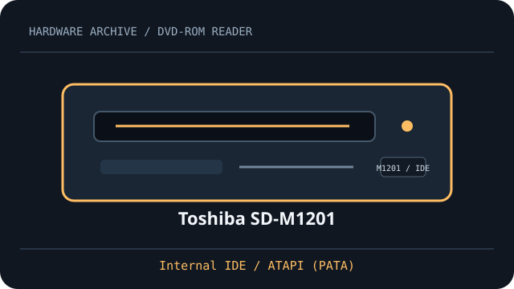

[ DVD-ROM READERS // IDENTIFIED MODEL ]
Toshiba SD-M1201
Read-only DVD-ROM/video and CD media support. Ratings and host configuration below are specific to Toshiba SD-M1201; match the full OEM suffix and firmware on the drive label.

IDENTIFICATION: Compare full model, suffix, OEM part number and firmware to the cited documentation before fitting, servicing or preservation reads.
Documented specifications
| Catalog subcategory | DVD-ROM readers (read-only class) |
|---|---|
| Exact model | Toshiba SD-M1201 |
| DVD read formats | DVD-ROM and DVD-Video |
| DVD read speed | up to 12×; maximum rating, not a sustained guarantee |
| CD read formats | CD-ROM and CD-DA (audio CD) |
| CD read speed | up to 40×; media and mode dependent |
| Interface | Internal IDE / ATAPI (PATA) |
| Bay and mechanism | 5.25-inch half-height tray-load bay; measure chassis depth, faceplate and mounting before installation. |
| Host compatibility | Requires an ATAPI-capable parallel-ATA controller, 40-pin IDE cable and supported host driver. DVD-Video playback also requires a compatible software decoder and region support. |
| Firmware, region and jumper caveats | Select Master, Slave or Cable Select with the rear IDE jumper in the position indicated by the unit label and exact SD-M1201 manual. RPC/region behavior depends on firmware and DVD player; check the exact OEM revision before playback and never cross-flash. |
Host fit & preservation notes
- Requires an ATAPI-capable parallel-ATA controller, 40-pin IDE cable and supported host driver. DVD-Video playback also requires a compatible software decoder and region support.
- Select Master, Slave or Cable Select with the rear IDE jumper in the position indicated by the unit label and exact SD-M1201 manual. RPC/region behavior depends on firmware and DVD player; check the exact OEM revision before playback and never cross-flash.
- Read ratings do not imply write support. Count recordable media only when this exact manual explicitly lists it.
- For imaging, record full drive label, OEM suffix, firmware, host controller, software, disc type and read errors; retain checksummed images and logs.
- Handle discs by edge or center hole; store in clean cases in cool, dry conditions away from direct sunlight. Avoid adhesives, abrasives and undocumented polishing/solvents.
Peak “×” read ratings are format-specific maximums, not guaranteed transfer rates.
Model documentation
- Toshiba SD-M1201 user manual (ManualsLib)Model-specific user manual for the SD-M1201, including installation, read formats and IDE configuration.
- Toshiba SD-M1201 user manual scan (Internet Archive)Second copy of the SD-M1201 manual; match the full label and firmware revision before applying compatibility notes.